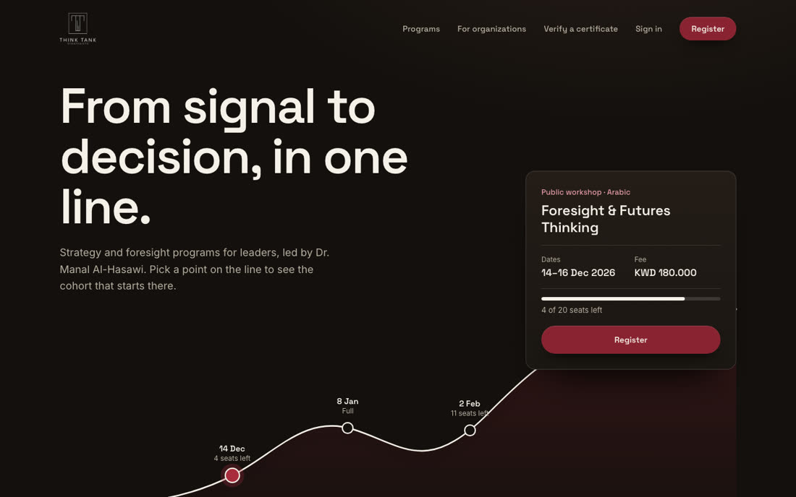
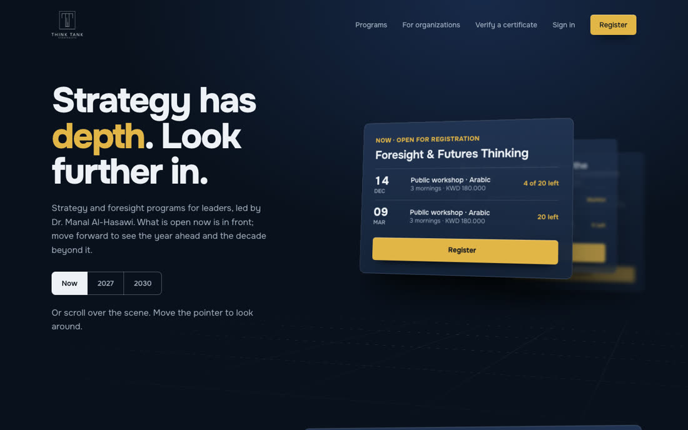
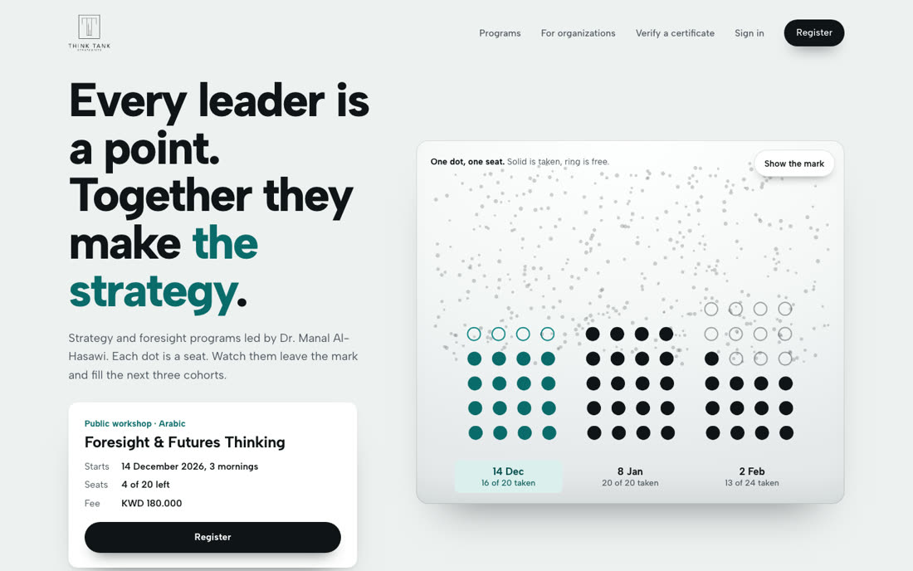
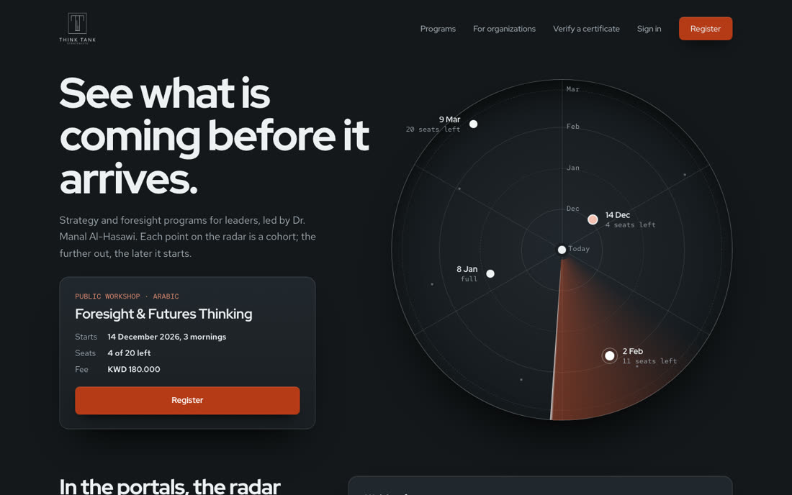
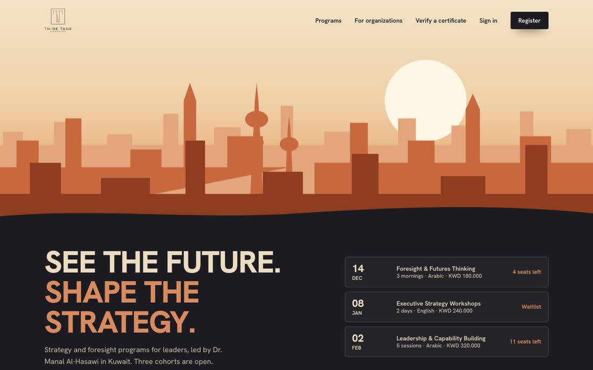

كل اتجاه صفحة حيّة بالإنجليزية: واجهة الموقع وشاشة من البوابات. افتحها، حرّك المؤشر، واضغط. الأول بألوان الدكتورة، والأربعة الباقية بألوان أخرى وبطابع احترافي.

ألوانها: بنّي داكن، كريمي، نبيذي
شعارها مرسوم بخط واحد، فالهوية كلها خط واحد: يبدأ من «اليوم» ويصعد عبر الدفعات القادمة، وكل دفعة نقطة عليه.

كحلي ليلي، لؤلؤي، ذهبي
مشهد ثلاثي الأبعاد بثلاث لوحات في العمق: «الآن» في المقدمة وفيها الدفعات المفتوحة، ثم 2027، ثم 2030. الكاميرا تسافر إلى اللوحة التالية.

أبيض هادئ، فحمي، فيروزي عميق
كل قيادي نقطة. مئات النقاط تتجمّع وترسم شعارها، ثم تتركه وتملأ ثلاثة أعمدة: مقاعد الدفعات القادمة، المحجوز منها والباقي.

فحمي، أبيض ثلجي، برتقالي أحمر
رصد الأفق هو أول أدوات الاستشراف. الرادار هنا تقويم الدفعات: كل نقطة دفعة، وبُعدها عن المركز هو بُعد موعدها.

رملي، طيني، داكن
مدينة الكويت عند الغروب بأربع طبقات، وتحتها شريط داكن فيه شعارها اللفظي. دافئ ورسمي، ويقول «الكويت» دون علم ولا صورة.